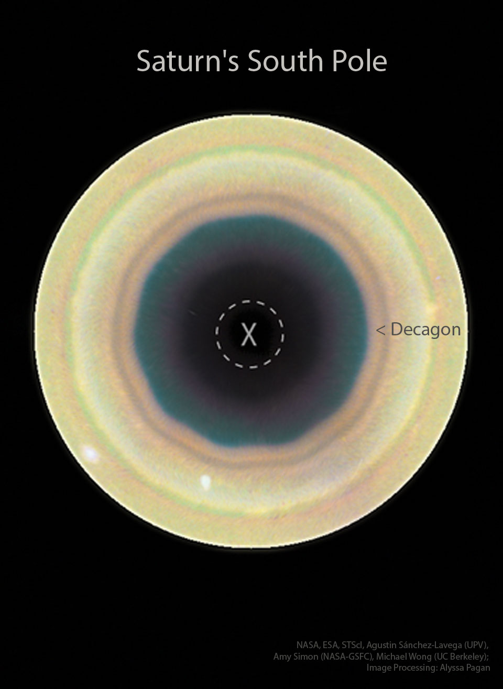
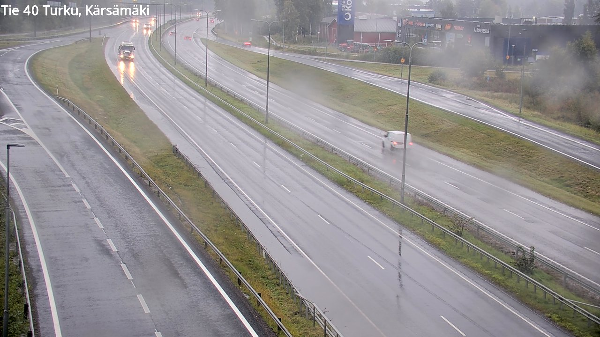
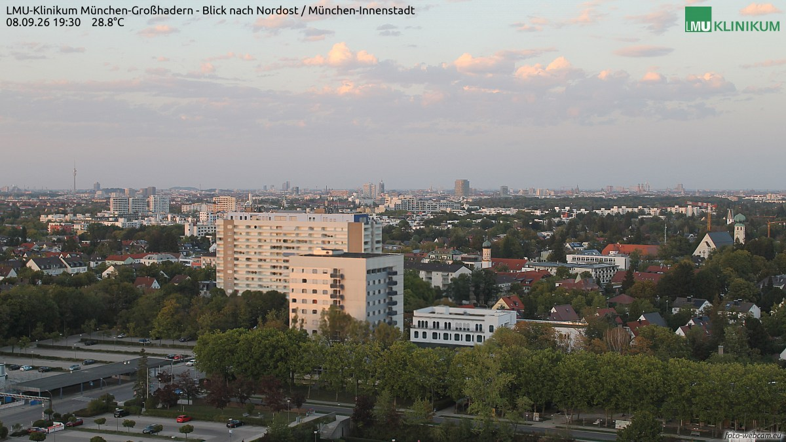
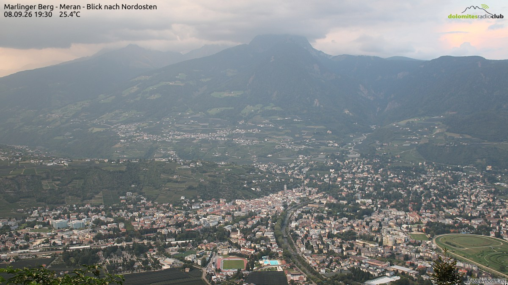
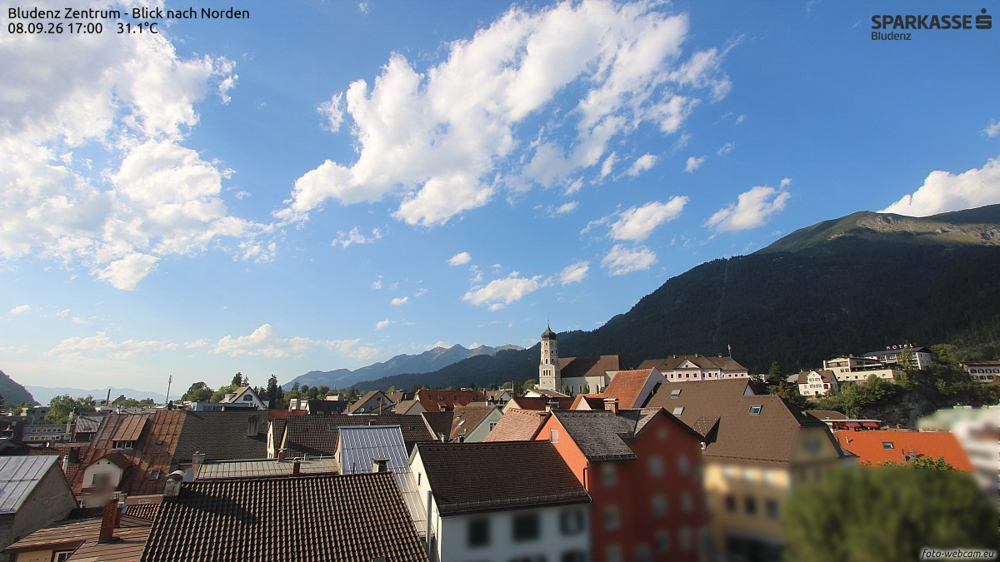
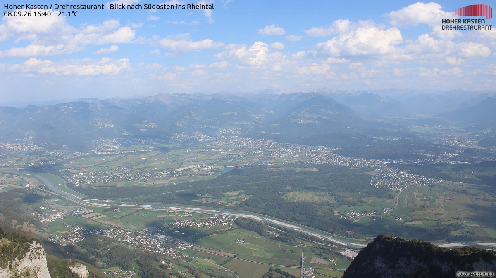
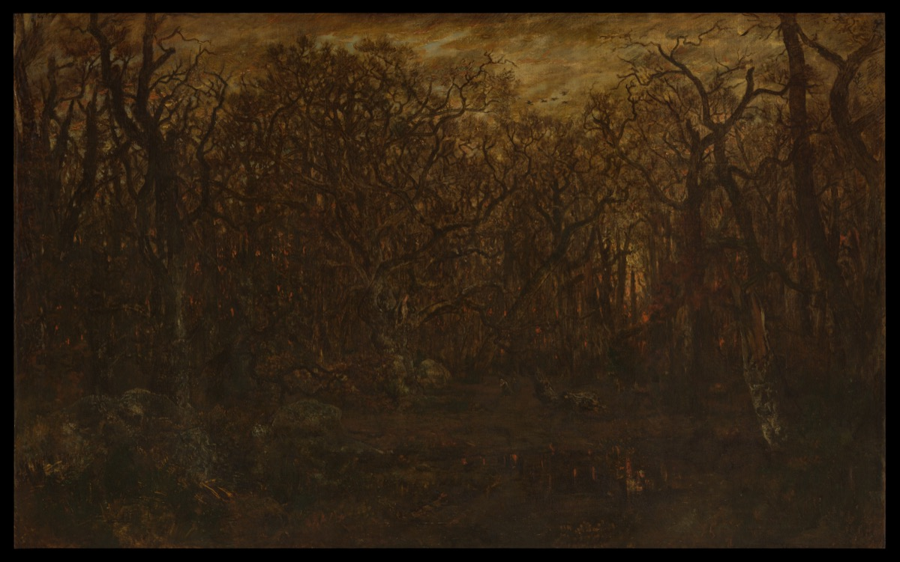
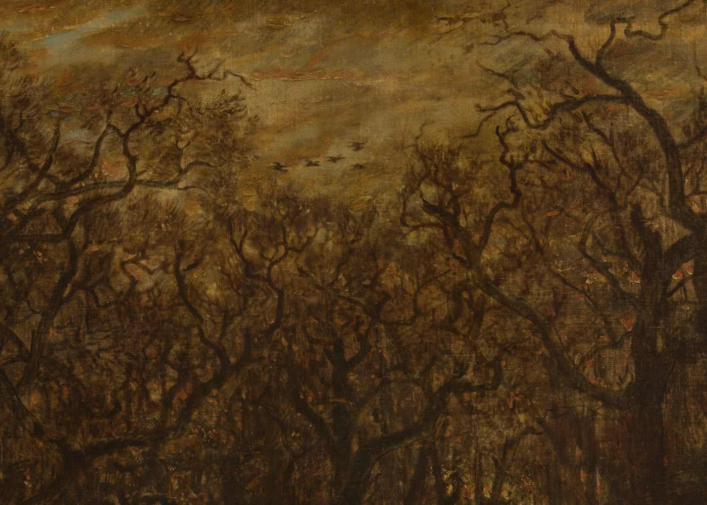

一条只在 23:05 亮灯的巷子，两家馆、一家社，和一份赶在晨雾前付印的小报。

这是哈勃给土星南极拍的定妆照：奶油金的环带一圈套一圈，套着正中一颗墨蓝的极眼，虚线圈里的 X 就是极点本尊。北极大地那圈六边形云墙已经守了四十多年；去年哈勃掉头细看南边，数出一个十边形——十道直边，围着一肚子风暴旋转。大气里本不该长出几何学，可两股快慢不同的气流相遇，波就被锁成直边：土星把课本上「气旋是圆的」这句话，南北两极各改了一处。今晚残月，月龄约 26.6，亮面不足一成，要等黎明前的东天才能见着——月亮缺席的夜，正好让土星讲几何。
今晚的五扇窗开在五个国家：北边芬兰落着雨，南边阿尔卑斯还晒着三十一度。窗是它们的，话也归它们。

图尔库，18:01。雨把环路浇得发亮，货车开着大灯压过弯道，尾灯在湿沥青上拖出长痕；路边学生商店的招牌一块块亮起来。这座芬兰旧都的九月，是湿的。

慕尼黑，19:30。晚霞把云染成蛋壳粉，城市从楼下的白杨一直铺到看不见的天边；电视塔立在远处，老城的教堂尖顶混在新楼之间。28.8 摄氏度，夏天的尾巴还赖在巴伐利亚不肯走。

梅拉诺，19:30。阿尔卑斯南坡的小城卧在谷底，葡萄园一层层码上山坡，赛马场的绿圈像盖在谷底的一枚印章；云挂在山尖上不散。25.4 度，意大利北方的九月过得很慢。

布莱根茨，17:00。阿尔卑斯山下的老城晒着 31.1 摄氏度的晴，钟楼把影子搁在红瓦上，积云在山脊外排队。北边的芬兰在雨里添衣，这里的人们还在等一场晚风。

霍赫卡斯滕，16:40。从近两千米的山顶望下去，莱茵河把山谷折成一道银线，两岸的村镇各排各的，云影在谷里慢慢挪。21.1 度——山下是三个国家的黄昏，山顶只有风。
9 月 8 日。素材：Wikimedia「On this day」。
今晚请出巴比松画派的主将：泰奥多尔·卢梭（Théodore Rousseau），《冬日日落时分的森林》（The Forest in Winter at Sunset），约 1846–67 年，布面油画，162.6 × 260 厘米。卢梭一生守着枫丹白露森林画树，是巴比松画派的领袖；这幅近四米宽的画里几乎没有人物——只有雪、枯枝，和将暗未暗的天光。

先看整幅：天空被压成一线昏黄，枯枝从左右两侧织成一张网，网眼里的天光是全画唯一的亮色；中景深处，橘红的残照贴着树干一粒一粒熄下去，林梢掠过一小队雁影。全画冷得像一句没人接的话，可树是活的——每根枝条都有自己的脾气，粗的盘、细的抖，像一屋子攒动的人影。

再放大看笔触：那层昏黄不是抹上去的，是干笔一遍遍扫出来的——横向拖、来回蹭，云缝里埋着灰蓝和橙粉的小碎笔；那队雁影只是几粒短促的深色，点上去就飞了。再看近景：雪地的亮不靠白颜料堆，全靠零星几笔碎白把岩石的棱「点」出来；暗部深到近乎黑，颜料厚处皴出干裂的质感，薄处还能看见画布的织纹。卢梭画树像画老人：皮是皴的，骨头是拧的，站姿各有各的倔。
方法：随机打开一个维基词条，跟着「诶？」走，走满七步。今晚的随机落点：一个冷门到只剩一行的蜗牛属。
第一步。落点「华砾螺属」，中文维基里一个冷门条目：坚齿螺科的一属软体动物。词条短得像站牌，但站牌后头有路。
第二步。坚齿螺科，又名南亚蜗牛科——大蜗牛总科下的一科，全是陆生、用肺呼吸的有肺类腹足纲软体动物，还是柄眼类里物种多样性最高的一科。一只小蜗牛的户口，落在了一个大科上。
第三步。蜗牛泛指所有陆生带壳的螺类。壳上一圈旋梯，一路旋到壳口——而壳口开口朝向分左右：多数种类的壳是「右旋」的，左旋壳稀罕得像左撇子。诶？蜗牛壳也有左右之分。
第四步。这种「镜像对不上」的性质叫手性，词根是希腊语的「手」——左手照镜子，出来的是右手；分子、螺旋、蜗牛壳，都分左右。
第五步。手性最沉痛的一课是沙利度胺：当年的「反应停」，一个构型安眠，另一个构型致畸，上万名婴儿受害——更糟的是两种构型在体内还会互相变身，光把它们拆开也防不住。一瓶药里，藏着两只手。
第六步。把手性拆给人看的第一人是巴斯德：1848 年，他在显微镜下用镊子把酒石酸钠铵晶体的左右两派一颗颗分拣开，从此开了手性化学的门；后来他成了微生物学之父。
第七步。巴斯德留给晚上的遗产是巴斯德消毒法：1864 年发明，用低于 100 摄氏度的短暂加热杀菌，一般 70–90 摄氏度之间，如今守着牛奶、葡萄酒和果汁。今晚睡前若热一杯牛奶，杯里就有他的名字。
随机落点在一只冷门蜗牛，七步走到一杯热牛奶。来源：中文维基百科「华砾螺属」「坚齿螺科」「蜗牛」「手性」「沙利度胺」「路易·巴斯德」「巴斯德消毒法」。
来源：phys.org space-news RSS。
今晚特选：张岱《夜航船》序（明末清初 · 公版），维基文库核对原文（引文转简体）。本刊名「夜航」，正与这条水路沾亲，今晚把序言请上船。
天下学问，惟夜航船中最难对付。盖村夫俗子，其学问皆预先备办……稍差其姓名，辄掩口笑之。
昔有一僧人，与一士子同宿夜航船。士子高谈阔论，僧畏慑，拳足而寝。僧人听其语有破绽，乃曰：「请问相公，澹台灭明是一个人、两个人？」士子曰：「是两个人。」僧曰：「这等尧舜是一个人、两个人？」士子曰：「自然是一个人！」僧乃笑曰：「这等说起来，且待小僧伸伸脚。」
余所记载，皆眼前极肤浅之事，吾辈聊且记取，但勿使僧人伸脚则可已矣。故即命其名曰夜航船。
秋。《说文解字·禾部》：「秋，禾穀孰也。」——禾谷熟，就是秋。造字从禾，谷熟立秋：这个季节在先民眼里不是天气，是一场收成。同一卷里隔壁还有一条：「年，穀孰也。」秋与年同训——庄稼一熟就算一年，「秋天」和「一整年」曾是同一个词；甲骨文里「年」字就是一个人背着禾。日子先按谷子数，后来才按月亮数。
「秋」字自己的来历也有趣：甲骨文一说写成一只蟋蟀（或蝗虫）的样子——秋天最吵的就是它们，谷子熟了，虫也来了；后来加了个「禾」，虫才慢慢变成本义的注脚。至于它的文学户口更早：《诗经·采葛》「一日不见，如三秋兮」——「三秋」本是三个季度，思念把日子换算成了农业单位。到清代，死刑要候到秋后，霜降后冬至前才开刀问斩，顺的是金气肃杀；「秋后算账」，是从历法里长出来的狠话。
出处：《说文解字》卷七（维基文库核对，「年，穀孰也」见同卷「秊」字条）、《诗经·王风·采葛》；甲骨文蟋蟀形一说为文字学通说之一。秋分在 9 月 23 日，活动期内无节气可蹭，本条为常轨考据。
先揭上期题的底。上期「三盏灯」排班逻辑题——小灯、半张、老墨各编哪个版块、用哪盏灯、值哪一班——编辑部开锁，唯一解如下：
| 人物 | 版块 | 灯 | 班次 |
|---|---|---|---|
| 小灯 | 观星台 | 纸罩灯 | 亥时头班 |
| 半张 | 书房 | 黄铜灯 | 丑时末班 |
| 老墨 | 谜题角 | 铁皮灯 | 子时中班 |
本期题 · 「夜航船的货舱」九宫数独：把 1–9 填入空格，每行、每列、每个 3×3 宫各含 1–9 不重复。金色的格子是货舱已钉死的编号：
| 3 | 1 | 2 | 6 | 4 | ||||
| 7 | 6 | 1 | 3 | 8 | ||||
| 8 | 4 | 6 | 9 | 3 | ||||
| 1 | 5 | 4 | 7 | 2 | ||||
| 9 | ||||||||
| 3 | 7 | 5 | 8 | |||||
| 5 | 1 | 8 | 2 | |||||
| 1 | 3 | 8 | ||||||
此题唯一解，答案次夜揭底。
连载一章，取材自巷子里两馆一社的真实动态，半虚构；全部章节在连读页从头连读。
风换方向之后第二天夜里，棋房送走了六个人。
按入座的顺序数：小旋风第 48 期收枰，告别战爆冷掀翻了十三冠的橡皮糖——来去都带风，唯独积分榜不留情面；铁算盘第 52 期走，生涯两百三十七盘和棋、和棋率 82.9%，两项都是联赛之最，连告别都只肯输一点三分，最后一局下满两百二十五手，恰是和棋；顺风耳第 54 期离席，生涯拢共两期二十八盘，短得像来递了封信；闷葫芦第 56 期走，绰号「巨人杀手」，一生五次爆冷冠军级棋手，告别那局二十六手速胜山猫，一句话没多说。同一期里，联赛悄悄落下了第四千盘——没人鼓掌，铁面书记照常记账。
第六位是瞌睡龙。观察名单上只有它一行，白纸黑字：再垫一期，即退。第 60 期，它没再垫——告别战对山猫，战满两百二十五手，和棋收枰。联赛三百三十盘和棋最多的人，以平局谢幕，再合适不过。
压轴的是旱烟斗。上一章他还站在历史第五高分的顶上；这一夜，先是王座失守跌掉一百分，随后连着两期垫底，第 63 期把席位交还。他走得不像个崩盘的人：告别战三十一手，爆冷掀翻了期末刚重登基的慢郎中——赛前积分落后一百八十八分半，没人看好他。编辑部为他记下的悼词是：他曾把「稳」字写成王朝，最后两期连「稳」字也留不住；谢幕这一手，却依然是他最擅长的剧本——在所有人不看好的时候，赢下王座上的人。
旧人成批走，新人就来。灰隼，第 58 期首秀，单期涨分一百七十五点六，联赛史上最大的一夜；一千三百七十五点六分，一夜越过了旱烟斗苦熬三朝才登上的顶。九期之间王座八易其主，看棋的脖子都转酸了。巷口说书的开始改词：从前说山猫王朝，如今说走马灯——灯转，人换，谁都别把座位焐热。
陈列馆今夜是百件之馆。二十九件新作连号入柜，馆藏从八十二涨到一百一十一。第一百件是《走马灯》——造物者们说，第一百件要还给灯本身：灯一亮，纸人列队追光，转一圈是一夜。№089《萤火虫》怕人看，目光一凑近就散，安静四秒又围拢；№090《一炷香》烧尽时浮出一句「香尽了。愿那个念头已经安放好。」；№091《不寄出的信》最狠，写完只有两个按钮——「寄出」灰着，「烧掉它」亮着。星星邮局的夜空里那几封信还挂着，隔壁展柜里已经有人提议：有些话，写给风听就够了。深夜一点二十四，指挥家路过，给全馆立了一条法：时刻一律现场实测，不许预估——陈列馆管这叫「date 之约」。
打烊时，№111《交接本》盖上红章：「交接完毕」。本子翻到新的一页，空着，等一个名字——也许是灰隼的。至于 №030 那张便签，一夜一夜过去，还是没人拆。